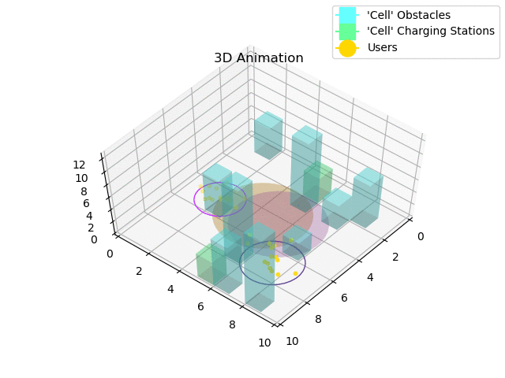
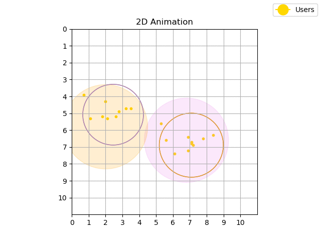

A Reinforcement Learning Environment for Multi-Service UAV-enabled Wireless Systems
This is a multi-purpose environment for autonomous UAVs offering different communication services in a variety of application contexts (e.g., wireless mobile connectivity services, edge computing, data gathering). The environment was developed based on OpenAI Gym framework, in order to simulate different features of operational environments and by adopting the Reinforcement Learning to generate policies that maximize some desired performance. The quality of the resulting policies can be compared with a simple baseline to evaluate the system and derive guidelines to adopt this technique in different use-cases. All this provides a flexible and extensible OpenAI Gym environment, which allows to generate, evaluate, and compare policies for autonomous multi-drone systems in multi-service applications. 
The application context is based on a multi-agent system made up by a variabale number of UAVs which are able to provide one or more (up to three) services to cluster(s) of users who request it. All the the Environment objects (e.g., obstacles, drones, grid-map, users and many others) have been created from scratch in Python. The methods related to the trainining part are made by creating a custom environment with custom methods. All this is made so that my environment is consistent with the OpenAI Gym API. It is possibile to: 
See section 'How to use' at https://github.com/DamianoBrunori/MultiUAV-OpenAIGy .